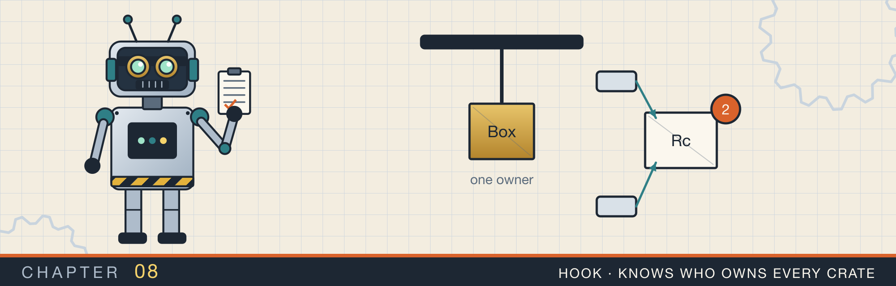
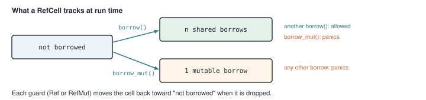

Ownership and the pointer types
This chapter covers
- Ownership and moves, drawn in memory
Box: putting a value on the heap, and why recursive types need itRc: one value with several owners, countedRefCell: changing a value that has several owners, checked while the program runsWeak: a pointer that does not keep its value alive, and the leak it preventsArcandMutex: sharing and changing a value across threadsCow: borrowing when possible and copying only when needed
Rust’s default affine ownership discipline assigns every value a single static owner and enforces aliasing XOR mutability at compile time. Although single ownership suffices for tree-structured, non-cyclic values, recursive data types, shared graph nodes, parent back-links, and cross-thread mutable state require explicit indirection, reference counting, or dynamic synchronization.
The Rust standard library models these ownership and mutability disciplines through smart pointer types. Each smart pointer encapsulates a heap address or interior-mutability guard while preserving memory safety through compile-time trait bounds or runtime checks. The sections below formalize the memory layout, invariants, and tradeoffs of Box, Rc, RefCell, Weak, Arc, Mutex, and Cow, beginning with a concise review of baseline move and borrow semantics.
8.1 Ownership and moves
Every value in Rust has a single owner, the variable or container responsible for it. When the owner leaves scope, the value is dropped and its memory is reclaimed.
Assigning a non-Copy value to another variable moves it: ownership transfers to the new binding, and the previous binding becomes unusable (Figure 8.1).

String. The small header is copied; the heap text is not. Only one variable may free the text, so the old one becomes unusable.A move copies only the stack-resident header (pointer, length, and capacity), leaving the heap allocation untouched. If both a and b remained valid, both would attempt to free the same heap buffer on drop; invalidating a prevents that double free at compile time.
Instead of transferring ownership, code can borrow a value through a reference. A shared reference (&T) grants read-only access, whereas a mutable reference (&mut T) grants exclusive read-write access. The borrow checker enforces two invariants: at any point, a value may have either any number of shared references or a single mutable reference, never both; and no reference may outlive the value it borrows.
These static rules govern most programs. The pointer types below address cases that require heap indirection, shared ownership, or dynamic borrow checking.
Listing 8.1 presents the module header and summary table for these types.
Listing 8.1 The module comment and imports (lines 1 to 27). src/problems/smart_pointers.rs
//! Smart pointers and interior mutability.
//!
//! Each pointer type answers a different ownership question, and picking the
//! wrong one shows up as either a compile error or a runtime bug.
//!
//! | Type | Ownership | Mutation | Across threads |
//! |---|---|---|---|
//! | `Box<T>` | single | through `&mut` | if `T: Send` |
//! | `Rc<T>` | shared, non-atomic count | no | no |
//! | `Arc<T>` | shared, atomic count | no | if `T: Send + Sync` |
//! | `RefCell<T>` | single | runtime checked | no |
//! | `Mutex<T>` | single | blocking lock | yes |
//! | `Weak<T>` | non-owning | no | as `Arc` |
//! | `Cow<'a, T>` | borrow or own | no | as the borrow |
//!
//! Two rules cover most decisions. `Rc`/`RefCell` is for graphs and caches inside
//! one thread; `Arc`/`Mutex` is for state shared between threads. `Weak` exists to
//! break reference cycles, because two strong references in a cycle never reach a
//! count of zero and the memory is never freed.
use std::{
borrow::Cow,
cell::RefCell,
rc::{Rc, Weak},
sync::{Arc, Mutex},
thread,
};There is no need to memorize the table up front; each subsequent section covers one row in detail.
8.2 Box: one owner, on the heap
A Box<T> allocates a value of type T on the heap and retains sole ownership of it. On a 64-bit architecture, the Box itself is an 8-byte pointer. When the Box leaves scope, it drops the pointee and frees the heap allocation, behaving like an owned value stored indirectly.
The primary use case for Box is defining recursive types. Consider an arithmetic expression that is either a numeric literal or the sum of two subexpressions. Without indirection, such a type would have infinite size (Figure 8.2).

Add that contains two Expr values directly would need infinite space. Right: with Box, an Add holds two pointers.To compute a type’s memory layout, the compiler requires a finite, statically known size. An Add(Expr, Expr) variant embeds two Expr values directly, each of which could itself be another Add, causing the size calculation to diverge. Because Box<Expr> always occupies 8 bytes regardless of what it points to, Add(Box<Expr>, Box<Expr>) has a fixed size.
Listing 8.2 An expression tree (lines 29 to 43).
/// A recursive type needs indirection, because `Expr` cannot contain itself by
/// value. `Box` provides the fixed-size indirection.
#[derive(Debug, PartialEq, Eq)]
pub enum Expr {
Lit(i64),
Add(Box<Expr>, Box<Expr>),
}
/// Evaluate an expression tree.
pub fn eval(expr: &Expr) -> i64 {
match expr {
Expr::Lit(value) => *value,
Expr::Add(left, right) => eval(left) + eval(right),
}
}The eval function computes the numeric value of an expression: literals return their stored integer, and sums recursively evaluate both operands and add the results. Passing left (of type &Box<Expr>) where &Expr is expected succeeds through deref coercion, an automatic conversion that follows the Box pointer to its target.
Constructing 1 + 2 uses Expr::Add(Box::new(Expr::Lit(1)), Box::new(Expr::Lit(2))), where Box::new allocates heap storage and moves each operand into it.
8.3 Rc: several owners, counted
Some structures inherently require multiple owners with no single owner responsible for deallocation, such as a graph node with multiple incoming edges. For single-threaded shared ownership, Rust provides Rc<T> (reference counted).
Calling Rc::new(value) allocates the value on the heap alongside a count of active handles. Calling Rc::clone(&rc) does not duplicate the underlying data; it increments the strong count and returns a new handle to the same allocation. Dropping a handle decrements the count, and when the count reaches zero, the value is dropped and freed (Figure 8.3).

Rc handles share one heap block. The block holds a strong count (the number of Rc handles), a weak count (section 8.5), and the value.Because multiple owners share the allocation, Rc exposes only shared references (&T). Issuing a &mut T through one handle would violate Rust’s aliasing invariant. Mutating shared data therefore requires interior mutability, covered in the next section.
NOTE: Rc updates its reference count with non-atomic arithmetic. Concurrent updates from multiple threads would cause a data race, so the compiler forbids sending an Rc across thread boundaries. Section 8.6 covers Arc, the thread-safe counterpart.
8.4 RefCell: changing a shared value, checked at run time
A RefCell<T> enables mutation through a shared reference by enforcing Rust’s borrowing rules at run time rather than compile time (Figure 8.4).

RefCell. Breaking the rules is not a compile error; it panics when it happens.cell.borrow()returns aRef<T>guard behaving like&T; multiple shared guards may coexist.cell.borrow_mut()returns aRefMut<T>guard behaving like&mut T; it panics if any other borrow is active.- Dropping a guard releases its borrow.
Combining Rc and RefCell as Rc<RefCell<T>> provides multiple owners with runtime-checked mutable access to the same value.
Listing 8.3 Two handles to one counter (lines 45 to 55).
/// Shared mutation inside one thread, with `Rc` for aliasing and `RefCell` for
/// the runtime borrow check.
pub fn shared_counter_with_rc_refcell() -> i32 {
let counter = Rc::new(RefCell::new(0));
let alias = Rc::clone(&counter);
*alias.borrow_mut() += 1;
*counter.borrow_mut() += 10;
*counter.borrow()
}Tracing the five statements of Listing 8.3 clarifies how reference counting and dynamic borrow guards interact:
Rc::new(RefCell::new(0))allocates a heap control block initialized to0with a strong count of1.Rc::clone(&counter)creates a second handlealiasto the same allocation, incrementing the strong count to2without duplicating the underlying integer.*alias.borrow_mut() += 1;acquires a temporaryRefMutguard throughalias, increments the value to1, and drops the guard at the semicolon, immediately releasing the exclusive borrow.*counter.borrow_mut() += 10;acquires and releases a second exclusive guard throughcounter, advancing the value to11.*counter.borrow()acquires a sharedRefguard and reads11.
Animation 8.1 illustrates these operations alongside the strong count and RefCell borrow state stored in the heap allocation.
borrow_mut panic at run time.Because each borrow_mut guard is dropped at the end of its statement, no borrows overlap and no panic occurs. Retaining the first guard in a local binding while invoking borrow_mut a second time triggers a runtime panic.
8.5 Weak: a pointer that does not own
Reference counting has a structural limitation: if two allocations hold Rc handles to each other, neither strong count can reach zero even after all external handles are dropped. This reference cycle leaks memory (Figure 8.5, left).

Weak breaks the cycle.Breaking a cycle requires a non-owning pointer. Calling Rc::downgrade produces a Weak<T> handle that increments the weak count rather than the strong count and does not prevent deallocation. Accessing the target requires calling upgrade(), which returns Some(Rc<T>) if the allocation is still alive and None if it has been dropped.
In hierarchical structures, parents typically own children via Rc while children hold non-owning Weak back-links to their parents.
Listing 8.4 A tree node with a weak parent pointer (lines 57 to 87).
/// A node whose parent link is weak, so a child does not keep its parent alive.
pub struct TreeNode {
pub value: i32,
parent: RefCell<Weak<TreeNode>>,
}
impl TreeNode {
/// A node with no parent.
pub fn root(value: i32) -> Rc<Self> {
Rc::new(Self {
value,
parent: RefCell::new(Weak::new()),
})
}
/// A node that points back weakly at `parent`.
pub fn child_of(parent: &Rc<Self>, value: i32) -> Rc<Self> {
Rc::new(Self {
value,
parent: RefCell::new(Rc::downgrade(parent)),
})
}
/// The parent's value, or `None` once the parent has been dropped.
pub fn parent_value(&self) -> Option<i32> {
self.parent
.borrow()
.upgrade()
.map(|parent| parent.value)
}
}parent: RefCell<Weak<TreeNode>>encapsulates the non-owning back-link inside aRefCellso parent attachment can be updated after node construction.rootconstructs a node withWeak::new(), a null weak reference whoseupgradealways yieldsNone.child_ofbinds the child’s parent field toRc::downgrade(parent), incrementing only the parent’s weak count.parent_valueborrows theRefCell, attemptsupgrade(), and projects the parent’s integer payload viaOption::mapif the parent allocation remains alive.
The test weak_parent_link_does_not_keep_the_parent_alive in Listing 8.7 verifies this behavior. Animation 8.2 traces that test and contrasts it with the leak caused by bidirectional Rc links.
Weak parent link lets the parent be freed. With Rc in both directions, each node keeps the other alive forever.Once root is dropped, its strong count reaches zero and the node is deallocated, causing subsequent parent_value() calls on child to return None.
8.6 Arc and Mutex: sharing across threads
Arc<T> is the thread-safe counterpart to Rc<T>, maintaining its reference count through hardware atomic instructions. An atomic read-modify-write executes indivisibly across processor cores, preventing data races on the reference count and allowing Arc handles to cross thread boundaries safely.
Mutex<T> is the thread-safe counterpart to RefCell<T>. Calling lock() acquires mutual exclusion and returns a MutexGuard; if another thread already holds the lock, the calling thread blocks until the guard is dropped rather than panicking.
Listing 8.5 Several threads adding to one total (lines 89 to 110).
/// Shared mutation across threads, with `Arc` for ownership and `Mutex` for
/// exclusive access.
pub fn total_with_arc_mutex(threads: usize, per_thread: usize) -> usize {
let total = Arc::new(Mutex::new(0usize));
let mut handles = Vec::with_capacity(threads);
for _ in 0..threads {
let total = Arc::clone(&total);
handles.push(thread::spawn(move || {
for _ in 0..per_thread {
let mut guard = total.lock().expect("mutex poisoned");
*guard += 1;
}
}));
}
for handle in handles {
handle.join().expect("worker panicked");
}
*total.lock().expect("mutex poisoned")
}The concurrent accumulation in Listing 8.5 proceeds in five steps:
Arc::new(Mutex::new(0usize))allocates a mutex-protected counter with an atomic strong count of1.- For each worker,
Arc::clone(&total)increments the atomic reference count, andthread::spawn(move || ...)transfers ownership of that cloned handle into the spawned thread’s closure. - Each worker acquires the lock, increments the protected counter, and drops the
MutexGuardon every iteration forper_threadcycles. handle.join()synchronizes with each worker thread’s termination before proceeding.- The final lock acquisition reads the aggregated total once all workers have exited.
If a thread panics while holding a MutexGuard, the protected state may violate its invariants; subsequent lock() calls return an Err indicating mutex poisoning. Calling .expect("mutex poisoned") propagates that failure by panicking.
Acquiring a mutex on every individual increment serializes all worker threads on a single cache line, degrading throughput under contention. Accumulating into a thread-local counter and locking once per thread eliminates that contention bottleneck.
8.7 Cow: borrowing when possible
The enum Cow<'a, str> (short for clone on write) holds either a borrowed &'a str or an owned String. It is suited to functions that usually return their input unmodified and allocate only when a transformation is required.
Listing 8.6 Uppercase only when needed (lines 112 to 126).
/// Borrow when no change is needed, allocate only when there is one.
///
/// `Cow` is the idiomatic return type for a function that usually passes its
/// input through unchanged.
pub fn normalize(input: &str, uppercase: bool) -> Cow<'_, str> {
if uppercase
&& input
.bytes()
.any(|byte| byte.is_ascii_lowercase())
{
Cow::Owned(input.to_uppercase())
} else {
Cow::Borrowed(input)
}
}In Listing 8.6, normalize scans the input bytes for any ASCII lowercase letter. When no conversion is needed, it returns Cow::Borrowed(input) without allocating. Only when modification is required does it allocate an uppercase String and return Cow::Owned. Callers can dereference either variant transparently as a &str.
8.8 The complete file
Listing 8.7 The complete file, with its tests. src/problems/smart_pointers.rs
//! Smart pointers and interior mutability.
//!
//! Each pointer type answers a different ownership question, and picking the
//! wrong one shows up as either a compile error or a runtime bug.
//!
//! | Type | Ownership | Mutation | Across threads |
//! |---|---|---|---|
//! | `Box<T>` | single | through `&mut` | if `T: Send` |
//! | `Rc<T>` | shared, non-atomic count | no | no |
//! | `Arc<T>` | shared, atomic count | no | if `T: Send + Sync` |
//! | `RefCell<T>` | single | runtime checked | no |
//! | `Mutex<T>` | single | blocking lock | yes |
//! | `Weak<T>` | non-owning | no | as `Arc` |
//! | `Cow<'a, T>` | borrow or own | no | as the borrow |
//!
//! Two rules cover most decisions. `Rc`/`RefCell` is for graphs and caches inside
//! one thread; `Arc`/`Mutex` is for state shared between threads. `Weak` exists to
//! break reference cycles, because two strong references in a cycle never reach a
//! count of zero and the memory is never freed.
use std::{
borrow::Cow,
cell::RefCell,
rc::{Rc, Weak},
sync::{Arc, Mutex},
thread,
};
/// A recursive type needs indirection, because `Expr` cannot contain itself by
/// value. `Box` provides the fixed-size indirection.
#[derive(Debug, PartialEq, Eq)]
pub enum Expr {
Lit(i64),
Add(Box<Expr>, Box<Expr>),
}
/// Evaluate an expression tree.
pub fn eval(expr: &Expr) -> i64 {
match expr {
Expr::Lit(value) => *value,
Expr::Add(left, right) => eval(left) + eval(right),
}
}
/// Shared mutation inside one thread, with `Rc` for aliasing and `RefCell` for
/// the runtime borrow check.
pub fn shared_counter_with_rc_refcell() -> i32 {
let counter = Rc::new(RefCell::new(0));
let alias = Rc::clone(&counter);
*alias.borrow_mut() += 1;
*counter.borrow_mut() += 10;
*counter.borrow()
}
/// A node whose parent link is weak, so a child does not keep its parent alive.
pub struct TreeNode {
pub value: i32,
parent: RefCell<Weak<TreeNode>>,
}
impl TreeNode {
/// A node with no parent.
pub fn root(value: i32) -> Rc<Self> {
Rc::new(Self {
value,
parent: RefCell::new(Weak::new()),
})
}
/// A node that points back weakly at `parent`.
pub fn child_of(parent: &Rc<Self>, value: i32) -> Rc<Self> {
Rc::new(Self {
value,
parent: RefCell::new(Rc::downgrade(parent)),
})
}
/// The parent's value, or `None` once the parent has been dropped.
pub fn parent_value(&self) -> Option<i32> {
self.parent
.borrow()
.upgrade()
.map(|parent| parent.value)
}
}
/// Shared mutation across threads, with `Arc` for ownership and `Mutex` for
/// exclusive access.
pub fn total_with_arc_mutex(threads: usize, per_thread: usize) -> usize {
let total = Arc::new(Mutex::new(0usize));
let mut handles = Vec::with_capacity(threads);
for _ in 0..threads {
let total = Arc::clone(&total);
handles.push(thread::spawn(move || {
for _ in 0..per_thread {
let mut guard = total.lock().expect("mutex poisoned");
*guard += 1;
}
}));
}
for handle in handles {
handle.join().expect("worker panicked");
}
*total.lock().expect("mutex poisoned")
}
/// Borrow when no change is needed, allocate only when there is one.
///
/// `Cow` is the idiomatic return type for a function that usually passes its
/// input through unchanged.
pub fn normalize(input: &str, uppercase: bool) -> Cow<'_, str> {
if uppercase
&& input
.bytes()
.any(|byte| byte.is_ascii_lowercase())
{
Cow::Owned(input.to_uppercase())
} else {
Cow::Borrowed(input)
}
}
#[cfg(test)]
mod tests {
use super::*;
#[test]
fn boxed_expression_evaluates() {
let expr = Expr::Add(Box::new(Expr::Lit(1)), Box::new(Expr::Lit(2)));
assert_eq!(eval(&expr), 3);
}
#[test]
fn rc_refcell_shares_mutation_within_a_thread() {
assert_eq!(shared_counter_with_rc_refcell(), 11);
}
#[test]
fn weak_parent_link_does_not_keep_the_parent_alive() {
let root = TreeNode::root(1);
let child = TreeNode::child_of(&root, 2);
assert_eq!(child.parent_value(), Some(1));
drop(root);
assert_eq!(child.parent_value(), None);
}
#[test]
fn arc_mutex_sums_concurrent_updates() {
assert_eq!(total_with_arc_mutex(8, 250), 2_000);
}
#[test]
fn cow_borrows_and_owns_as_needed() {
assert!(matches!(normalize("A100", true), Cow::Borrowed(_)));
assert!(matches!(normalize("a100", true), Cow::Owned(_)));
assert_eq!(normalize("a100", true), "A100");
assert_eq!(normalize("a100", false), "a100");
}
}The unit tests verify one core property per pointer type. Notably, cow_borrows_and_owns_as_needed uses matches! to verify the returned enum variant rather than comparing text alone, proving that the unchanged path performs no heap allocation. Run the suite with cargo test --lib smart_pointers.
Figure 8.6 distills the chapter into a three-question decision tree for selecting the appropriate pointer type.

Summary
- Rust’s affine ownership model assigns every value a single static owner: assignment transfers ownership by copying only the stack header, whereas borrowing grants temporary shared or exclusive access without moving ownership.
Box<T>provides single-owner heap indirection with a fixed pointer size, enabling recursive algebraic types to have statically known layouts.Rc<T>enables single-threaded shared ownership via non-atomic reference counting;Rc::cloneincrements the strong count without duplicating the pointee.RefCell<T>provides single-threaded interior mutability by enforcing aliasing XOR mutability at runtime, panicking on overlapping conflicting borrows.- Bidirectional
Rccycles prevent strong counts from reaching zero and leak memory;Weak<T>provides a non-owning reference that breaks cycles and upgrades toOption<Rc<T>>. Arc<T>uses atomic reference counting for cross-thread shared ownership, andMutex<T>enforces mutual exclusion by blocking contending threads until the activeMutexGuardis dropped.Cow<'a, T>defers heap allocation by returning borrowed data unchanged and cloning into an owned buffer only when mutation is required.
Exercises
- Build the expression
(1 + 2) + 3withExprand check thatevalreturns 6. - In
shared_counter_with_rc_refcell, keep the firstborrow_mutguard in a variable and callborrow_mutagain. Run it and read the panic message. - Build a parent with two children that point back with
Weak. PrintRc::strong_countandRc::weak_countfor the parent before and after creating the children. - Change
total_with_arc_mutexso each thread counts in a local variable and adds its total to the mutex once. Compare the running time for 8 threads and one million increments each.